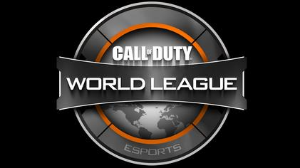

From July 26th to July 28th in New York at the Arthur Ashe Stadium some of the best gamers in the world gather for the world championships. Day 1 consists of the creative finals and 1 v 1's followed by the celebrity pro-am. The headline celebrities fortnite brings in consisted of mostly professional athletes in the NBA and NFL. Including running back legend, Marshawn Lynch, and Patriots very own linebacker, Kyle Van Noy. These activities were filled with many winners which recieved some large sums of money! Everyone who qualified to get on the big stage wound up with a minimum take of $50,000 in prize money. Sen Bugha finished the richest with a take for 3 million dollars for winning the solo title, which then Nyhrox and Aqua followed with 1.5 million for their championship in the duos competetion. The best part about this headline tourament is that when they bring together all these celebraties for the Pro-am games, the winners get to choose where their 1 million dollars of winnings will go for charity. This event gathered over 200,000 viewers between streams and in the stadium. Next summer this tournament should continue to blow up and continue helping streamers and charities with the massively generous prize money!
Fortnite World Cup
Call of Duty World League Championship:
During the month of August, numerous great call of duty players gather in the hills of Hollywood to compete for the crown. This is an annual tournament held at the end of each season to allow the best players to compete and make a fair amount of money for their skills. The steps to make it here take years and years of perfecting your craft. Only 32 teams will advance this far so just about the top 100 players in the world will be there. After such successful years at the beginning of the annual tournament they continued to grow the purse to which was 2 million dollars towards the winning roster. Certainly one of the most entertaining events and a life changing tournament for some of the greatest players.
Call of Duty World League Championship
Winner?

League of Legends World Championships:
From October 1st to November 3rd, Riot Games hosts their annual championship in cities acrosss South Korea. 24 teams from all over the world will qualify for this tournament by beating all the competition in their respective areas. The interest in this specific game developed as big upsets happened throughout the tournament and teams qualified from North America, Europe, China, and South Korea. The ability for the tournament to hook in viewers from all these countries led to huge numbers of online viewers. The championship itself brought in over 200 million viewers. This even topped the most well known event in America in views, the Super Bowl. This tournament was the most watched esports event in early history of esports. Although Fortnite has blown up to take some spotlight from League of Legends, they still continue to host top notch events every fall and will continue to do so for a long time to come.
League of Legends